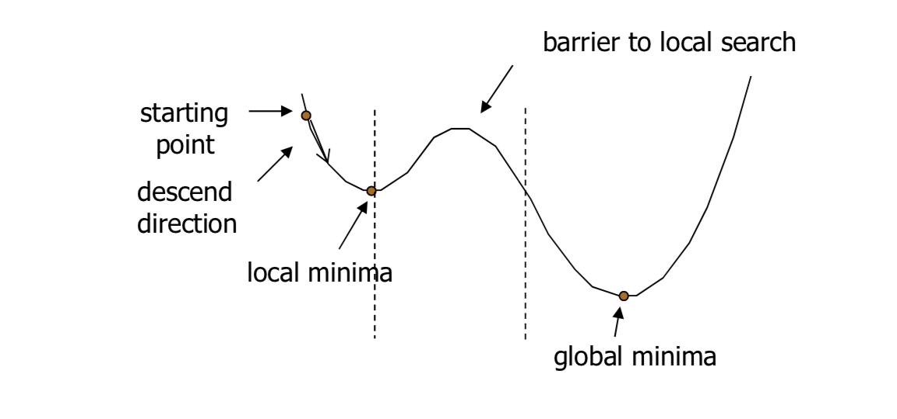

Hyperparameter tuning in tidymodels
This post will not go very detail in each of the approach of hyperparameter tuning. This post mainly aims to summarize a few things that I studied for the last couple of days. Generally, there are two approaches to hyperparameter tuning in tidymodels.
- Grid search:
– Regular grid search
– Random grid search
- Iterative search:
– Bayesian optimization
– Simulated annealing
Grid search
So, in grid search, we provide the combination of parameters and the algorithm will go through each combination of parameters. There are two types of grid search:
- Regular grid search
– The algorithm will go through each combinations of parameters.
grid_regular(mtry(c(1, 13)),
trees(),
min_n(),
levels = 3) # how many from each parameter## # A tibble: 27 x 3
## mtry trees min_n
## <int> <int> <int>
## 1 1 1 2
## 2 7 1 2
## 3 13 1 2
## 4 1 1000 2
## 5 7 1000 2
## 6 13 1000 2
## 7 1 2000 2
## 8 7 2000 2
## 9 13 2000 2
## 10 1 1 21
## # ... with 17 more rows- Random grid search
– The algorithm will randomly select a number of combination of parameters instead of go through each of them.
grid_random(mtry(c(1, 13)),
trees(),
min_n(),
size = 100) # size of parameters combination## # A tibble: 100 x 3
## mtry trees min_n
## <int> <int> <int>
## 1 5 1216 40
## 2 8 1374 13
## 3 9 859 39
## 4 6 282 12
## 5 2 1210 9
## 6 8 1828 39
## 7 11 550 14
## 8 13 1157 32
## 9 5 282 6
## 10 10 1018 28
## # ... with 90 more rowsBy default, tidymodels uses space-filling-design to make sure the combination of parameters are on “equidistance” to each other.
Iterative search
In iterative search, we need to specify some initial parameters/values to start the search.
- Bayesian optimization
– This algorithm/function will search the next best combination of parameters based on the previous combination of parameters (priori). - Simulated annealing
– Generally, this algorithm works relatively similar to bayesian optimization.
– However, as the figure below illustrates this algorithm is able to explore in the worst combination of parameters for a short term (barrier of local search), in order to find the best combination of parameters (global minima). 
Futher details on iterative search or both methods above can be found here. So, as both iterative methods need a starting parameters, we can actually combine with any of the grid search methods.
Other methods
By default, if we do not supply any combination of parameters, tidymodels will randomly pick 10 combinations of parameters from the default range of values from the model. Additionally, we can set this values to other values as shown below:
tune_grid(
resamples = dat_cv, # cross validation data set
grid = 20, # 20 combinations of parameters
control = control, # some control parameters
metrics = metrics # some metrics parameters (roc_auc, etc)
)There are another special cases of grid search; tune_race_anova() and tune_race_win_loss(). Both of these methods supposed to be more efficient way of grid search. In general, both methods evaluate the tuning parameters on a small initial set. The combination of parameters with a worst performance will be eliminated. Thus, makes them more efficient in grid search. The main difference between these two methods is how the worst combination of parameters are evaluated and eliminated.
R codes
Load the packages.
# Packages
library(tidyverse)
library(tidymodels)
library(finetune)We will only use a small chunk of the data for ease of computation.
# Data
data(income, package = "kernlab")
# Make data smaller for computation
set.seed(2021)
income2 <-
income %>%
filter(INCOME == "[75.000-" | INCOME == "[50.000-75.000)") %>%
slice_sample(n = 600) %>%
mutate(INCOME = fct_drop(INCOME),
INCOME = fct_recode(INCOME,
rich = "[75.000-",
less_rich = "[50.000-75.000)"),
INCOME = factor(INCOME, ordered = F)) %>%
mutate(across(-INCOME, fct_drop))
# Summary of data
glimpse(income2)## Rows: 600
## Columns: 14
## $ INCOME <fct> less_rich, rich, rich, rich, less_rich, rich, rich, les~
## $ SEX <fct> F, M, F, M, F, F, F, M, F, M, M, M, F, F, F, F, M, M, M~
## $ MARITAL.STATUS <fct> Married, Married, Married, Single, Single, NA, Married,~
## $ AGE <ord> 35-44, 25-34, 45-54, 18-24, 18-24, 14-17, 25-34, 25-34,~
## $ EDUCATION <ord> 1 to 3 years of college, Grad Study, College graduate, ~
## $ OCCUPATION <fct> "Professional/Managerial", "Professional/Managerial", "~
## $ AREA <ord> 10+ years, 7-10 years, 10+ years, -1 year, 4-6 years, 7~
## $ DUAL.INCOMES <fct> Yes, Yes, Yes, Not Married, Not Married, Not Married, N~
## $ HOUSEHOLD.SIZE <ord> Five, Two, Four, Two, Four, Two, Three, Two, Five, One,~
## $ UNDER18 <ord> Three, None, None, None, None, None, One, None, Three, ~
## $ HOUSEHOLDER <fct> Own, Own, Own, Rent, Family, Own, Own, Rent, Own, Own, ~
## $ HOME.TYPE <fct> House, House, House, House, House, Apartment, House, Ho~
## $ ETHNIC.CLASS <fct> White, White, White, White, White, White, White, White,~
## $ LANGUAGE <fct> English, English, English, English, English, NA, Englis~# Outcome variable
table(income2$INCOME)##
## less_rich rich
## 362 238# Missing data
DataExplorer::plot_missing(income)
Split the data and create a 10-fold cross validation.
set.seed(2021)
dat_index <- initial_split(income2, strata = INCOME)
dat_train <- training(dat_index)
dat_test <- testing(dat_index)
## CV
set.seed(2021)
dat_cv <- vfold_cv(dat_train, v = 10, repeats = 1, strata = INCOME)We going to impute the NAs with mode value since all the variable are categorical.
# Recipe
dat_rec <-
recipe(INCOME ~ ., data = dat_train) %>%
step_impute_mode(all_predictors()) %>%
step_ordinalscore(AGE, EDUCATION, AREA, HOUSEHOLD.SIZE, UNDER18)
# Model
rf_mod <-
rand_forest(mtry = tune(),
trees = tune(),
min_n = tune()) %>%
set_mode("classification") %>%
set_engine("ranger")
# Workflow
rf_wf <-
workflow() %>%
add_recipe(dat_rec) %>%
add_model(rf_mod)Parameters for grid search
# Regular grid
reg_grid <- grid_regular(mtry(c(1, 13)),
trees(),
min_n(),
levels = 3)
# Random grid
rand_grid <- grid_random(mtry(c(1, 13)),
trees(),
min_n(),
size = 100)Tune models using regular grid search. We going to use doParallel library to do parallel processing.
ctrl <- control_grid(save_pred = T,
extract = extract_model)
measure <- metric_set(roc_auc)
# Parallel for regular grid
library(doParallel)
# Create a cluster object and then register:
cl <- makePSOCKcluster(4)
registerDoParallel(cl)
# Run tune
set.seed(2021)
tune_regular <-
rf_wf %>%
tune_grid(
resamples = dat_cv,
grid = reg_grid,
control = ctrl,
metrics = measure)
stopCluster(cl)Result for regular grid search:
autoplot(tune_regular)
show_best(tune_regular)## # A tibble: 5 x 9
## mtry trees min_n .metric .estimator mean n std_err .config
## <int> <int> <int> <chr> <chr> <dbl> <int> <dbl> <chr>
## 1 7 1000 21 roc_auc binary 0.690 10 0.0148 Preprocessor1_Model14
## 2 7 1000 40 roc_auc binary 0.689 10 0.0179 Preprocessor1_Model23
## 3 7 2000 40 roc_auc binary 0.689 10 0.0178 Preprocessor1_Model26
## 4 7 1000 2 roc_auc binary 0.688 10 0.0173 Preprocessor1_Model05
## 5 7 2000 21 roc_auc binary 0.688 10 0.0159 Preprocessor1_Model17Tune models using random grid search.
# Parallel for random grid
# Create a cluster object and then register:
cl <- makePSOCKcluster(4)
registerDoParallel(cl)
# Run tune
set.seed(2021)
tune_random <-
rf_wf %>%
tune_grid(
resamples = dat_cv,
grid = rand_grid,
control = ctrl,
metrics = measure)
stopCluster(cl)Result for random grid search:
autoplot(tune_random)
show_best(tune_random)## # A tibble: 5 x 9
## mtry trees min_n .metric .estimator mean n std_err .config
## <int> <int> <int> <chr> <chr> <dbl> <int> <dbl> <chr>
## 1 4 1016 4 roc_auc binary 0.694 10 0.0164 Preprocessor1_Model0~
## 2 5 1360 3 roc_auc binary 0.693 10 0.0168 Preprocessor1_Model0~
## 3 6 129 14 roc_auc binary 0.693 10 0.0164 Preprocessor1_Model0~
## 4 5 1235 3 roc_auc binary 0.692 10 0.0168 Preprocessor1_Model0~
## 5 6 160 31 roc_auc binary 0.692 10 0.0172 Preprocessor1_Model0~Random grid search has slightly a better result. Let’s use this random search result as a base for iterative search. Firstly, we limit the parameters based on the plot from a random grid search.
rf_param <-
rf_wf %>%
parameters() %>%
update(mtry = mtry(c(5, 13)),
trees = trees(c(1, 500)),
min_n = min_n(c(5, 30)))Now we do a bayesian optimization.
# Parallel for bayesian optimization
# Create a cluster object and then register:
cl <- makePSOCKcluster(4)
registerDoParallel(cl)
# Run tune
set.seed(2021)
bayes_tune <-
rf_wf %>%
tune_bayes(
resamples = dat_cv,
param_info = rf_param,
iter = 60,
initial = tune_random, # result from random grid search
control = control_bayes(no_improve = 30, verbose = T, save_pred = T),
metrics = measure)
stopCluster(cl)Result for bayesian optimization.
autoplot(bayes_tune, "performance")
show_best(bayes_tune)## # A tibble: 5 x 10
## mtry trees min_n .metric .estimator mean n std_err .config .iter
## <int> <int> <int> <chr> <chr> <dbl> <int> <dbl> <chr> <int>
## 1 4 1016 4 roc_auc binary 0.694 10 0.0164 Preprocessor1_~ 0
## 2 5 1360 3 roc_auc binary 0.693 10 0.0168 Preprocessor1_~ 0
## 3 6 129 14 roc_auc binary 0.693 10 0.0164 Preprocessor1_~ 0
## 4 6 189 15 roc_auc binary 0.693 10 0.0153 Iter1 1
## 5 5 1235 3 roc_auc binary 0.692 10 0.0168 Preprocessor1_~ 0We get a slightly better result from bayesian optimization. I will not do a simulated annealing approach since I get an error, though I am not sure why.
Lastly, we do a race anova.
# Parallel for race anova
# Create a cluster object and then register:
cl <- makePSOCKcluster(4)
registerDoParallel(cl)
# Run tune
set.seed(2021)
tune_efficient <-
rf_wf %>%
tune_race_anova(
resamples = dat_cv,
grid = rand_grid,
control = control_race(verbose_elim = T, save_pred = T),
metrics = measure)
stopCluster(cl)We get a relatively similar result to random grid search but with faster computation.
autoplot(tune_efficient)
show_best(tune_efficient)## # A tibble: 5 x 9
## mtry trees min_n .metric .estimator mean n std_err .config
## <int> <int> <int> <chr> <chr> <dbl> <int> <dbl> <chr>
## 1 5 1425 5 roc_auc binary 0.695 10 0.0161 Preprocessor1_Model0~
## 2 11 406 2 roc_auc binary 0.694 10 0.0183 Preprocessor1_Model0~
## 3 6 631 3 roc_auc binary 0.692 10 0.0171 Preprocessor1_Model0~
## 4 7 1264 4 roc_auc binary 0.692 10 0.0159 Preprocessor1_Model0~
## 5 9 1264 3 roc_auc binary 0.692 10 0.0188 Preprocessor1_Model0~Show code
# regular grid
rf_reg <-
tune_regular %>%
select_best(metric = "roc_auc")
reg_auc <-
tune_regular %>%
collect_predictions(parameters = rf_reg) %>%
roc_curve(INCOME, .pred_less_rich) %>%
mutate(model = "regular_grid")
# random grid
rf_rand <-
tune_random %>%
select_best(metric = "roc_auc")
rand_auc <-
tune_random %>%
collect_predictions(parameters = rf_rand) %>%
roc_curve(INCOME, .pred_less_rich) %>%
mutate(model = "random_grid")
# bayes
rf_bayes <-
bayes_tune %>%
select_best(metric = "roc_auc")
bayes_auc <-
bayes_tune %>%
collect_predictions(parameters = rf_bayes) %>%
roc_curve(INCOME, .pred_less_rich) %>%
mutate(model = "bayes")
# race_anova
rf_eff <-
tune_efficient %>%
select_best(metric = "roc_auc")
eff_auc <-
tune_efficient %>%
collect_predictions(parameters = rf_eff) %>%
roc_curve(INCOME, .pred_less_rich) %>%
mutate(model = "race_anova")
# Compare ROC between all tuning approach
bind_rows(reg_auc, rand_auc, bayes_auc, eff_auc) %>%
ggplot(aes(x = 1 - specificity, y = sensitivity, col = model)) +
geom_path(lwd = 1.5, alpha = 0.8) +
geom_abline(lty = 3) +
coord_equal() +
scale_color_viridis_d(option = "plasma", end = .6) +
theme_bw()
Finally, we fit our best model (bayesian optimization) to the testing data.
# Finalize workflow
best_rf <-
select_best(bayes_tune, "roc_auc")
final_wf <-
rf_wf %>%
finalize_workflow(best_rf)
final_wf## == Workflow ====================================================================
## Preprocessor: Recipe
## Model: rand_forest()
##
## -- Preprocessor ----------------------------------------------------------------
## 2 Recipe Steps
##
## * step_impute_mode()
## * step_ordinalscore()
##
## -- Model -----------------------------------------------------------------------
## Random Forest Model Specification (classification)
##
## Main Arguments:
## mtry = 4
## trees = 1016
## min_n = 4
##
## Computational engine: ranger# Last fit
test_fit <-
final_wf %>%
last_fit(dat_index)
# Evaluation metrics
test_fit %>%
collect_metrics()## # A tibble: 2 x 4
## .metric .estimator .estimate .config
## <chr> <chr> <dbl> <chr>
## 1 accuracy binary 0.583 Preprocessor1_Model1
## 2 roc_auc binary 0.611 Preprocessor1_Model1test_fit %>%
collect_predictions() %>%
roc_curve(INCOME, .pred_less_rich) %>%
autoplot()
Conclusion
The result is not that good. Our AUC is quite lower. However, we did use only about 8% from the overall data. Nonetheless, the aim of this post is to cover an overview of hyperparameter tuning in tidymodels.
Additionally, there are another two function to construct parameter grids that I did not cover in this post; grid_max_entropy() and grid_latin_hypercube(). Both of these functions do not have much resources explaining them (or at least I did not found it), however, for those interested, a good start will be the tidymodels website.
References:
https://www.tmwr.org/grid-search.html
https://www.tmwr.org/iterative-search.html
https://oliviergimenez.github.io/learning-machine-learning/#
https://towardsdatascience.com/optimization-techniques-simulated-annealing-d6a4785a1de7
Tengku Muhammad Hanis
PhD student (Public Health Epidemiology)
My research interests include medical statistics and machine learning application.